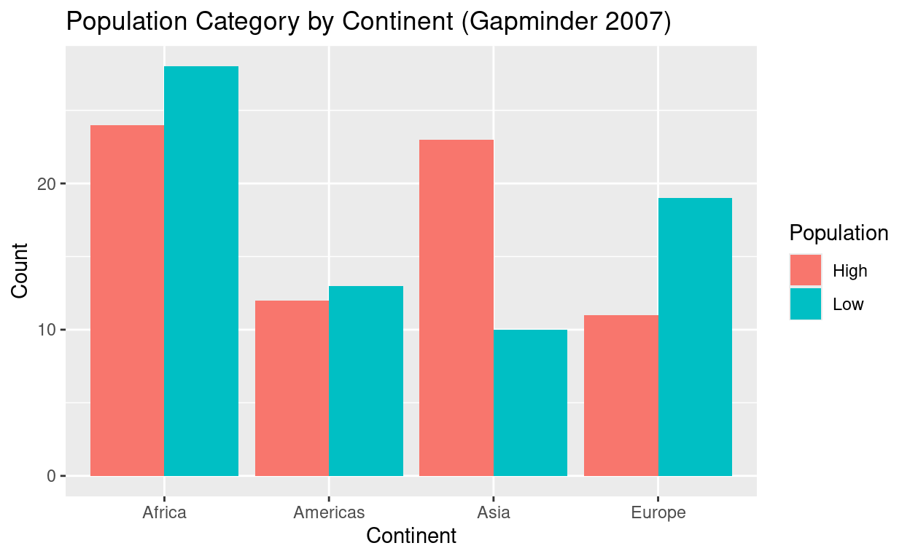
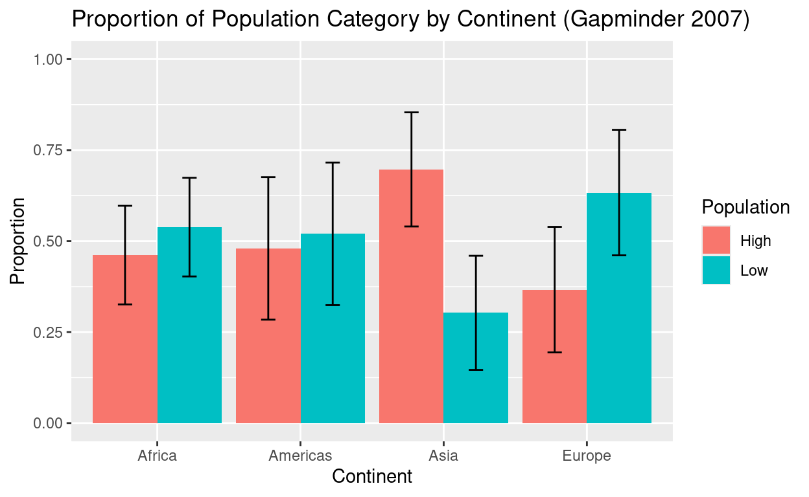

Introduction
In this tutorial, you will learn how to run a chi-squared test using your own dataset. This test is used when your variables are categorical—also known as nominal scale data.
You will:
Learn about the types of chi-squared tests
Upload your data
Check assumptions
Run the test
Interpret the output
Report your findings
Theory: What is a Chi-Squared Test?
Chi-squared tests are used to assess whether observed categorical data differ significantly from what we would expect under a specific hypothesis.
There are two main types:
- Chi-Square Goodness-of-Fit Test – Compares the distribution of a single categorical variable to a theoretical distribution.
- Chi-Square Test of Independence – Assesses whether two categorical variables are related.
Example: Do people select card suits (hearts, diamonds, clubs, spades) at random? If yes, we’d expect each suit to be selected 25% of the time.
The test statistic is calculated as:
\[ \chi^2 = \sum \frac{(O_i - E_i)^2}{E_i} \]
Where:
\(O_i\) = Observed frequency
\(E_i\) = Expected frequency
Step 1: Load Your Data
Use the method that you developed to work with your data.
# We have used code like this
my_data <- read_csv("your_file.csv")
glimpse(my_data)Step 2: Summarize Your Categorical Variable
# Replace 'your_column' with the name of your categorical column
table(my_data$your_column)We’ll use the gapminder dataset as an example throughout
this tutorial. First, we’ll prepare the data by creating a categorical
variable and summarizing it.
This code will create a new variable that will determine the median population across all countries. Then, we will use this later to determine if the balance among the continents is equal.
We are asking: “How many countries in this continent are above the global median, and how many are below?” -OR- “Is there a relationship between continent and being a high- or low-population country, relative to the global midpoint?”
This gives us a 2 × 5 contingency table (2 population categories × 5 continents), which is perfect for a chi-squared test of independence.
gapminder_sample <- gapminder %>%
filter(year == 2007) %>%
mutate(pop_cat = ifelse(pop > median(pop), "High", "Low"))
table_data <- table(gapminder_sample$continent, gapminder_sample$pop_cat)
table_data##
## High Low
## Africa 24 28
## Americas 12 13
## Asia 23 10
## Europe 11 19
## Oceania 1 1Our data is now represented in a table that has one categorical variable in the rows (e.g., continent) and another categorical variable in the columns (e.g., population category). Each cell represents the count of how many cases fall into each combination. This table will be plugged into the function to run our test.
Step 3: Check Assumptions
Before we proceed, we must check that we are not violating any assumptions for our test. Those assumptions are:
- Expected frequency in each cell should be ≥ 5
- Observations should be independent
# Use expected frequencies to check your data
chisq.test(table(my_data$your_column))$expectedWe now check the assumptions of the chi-squared test: expected counts should be ≥ 5, and observations should be independent.
chisq_test_result <- chisq.test(table_data)## Warning in chisq.test(table_data): Chi-squared approximation may be incorrectchisq_test_result$expected##
## High Low
## Africa 26.0 26.0
## Americas 12.5 12.5
## Asia 16.5 16.5
## Europe 15.0 15.0
## Oceania 1.0 1.0any(chisq_test_result$expected < 5)## [1] TRUEThe result is TRUE, meaning that we have a cell that is
less than 5. We will drop this row from our table.
# Drop any rows that are less than 5 for example
gapminder_sample <- gapminder_sample %>%
filter(continent != "Oceania")Technically, a side note: Fisher’s Exact Test is a statistical test used to examine the association between two categorical variables — just like the chi-squared test — but specifically designed for small sample sizes or when expected counts are very low (usually < 5 in one or more cells). In our case, to use the standard chi-squared test, we will drop the row that is less than 5, but Fisher’s Exact Test could be used instead.
Step 4: Run the Chi-Squared Goodness-of-Fit Test
# For equal probabilities
chisq.test(table(my_data$your_column))# With custom probabilities (e.g., 0.3, 0.3, 0.2, 0.2)
chisq.test(table(my_data$your_column), p = c(0.3, 0.3, 0.2, 0.2))Our hypotheses
Null hypothesis (H0H_0H0): The two variables are independent.
Population category (High/Low) is not associated with continent.Alternative hypothesis (HAH_AHA): The variables are dependent.
There is an association between population category and continent.
We can now run the test and view the results.
# We saved this object in Step 3: Check Assumptions
# chisq_test_result <- chisq.test(table_data)
chisq_test_result##
## Pearson's Chi-squared test
##
## data: table_data
## X-squared = 7.6022, df = 4, p-value = 0.1073Step 5: Visualize the Distribution
# Observed visualization example
ggplot(my_data, aes(x = your_column)) +
geom_bar() +
labs(title = "Observed Frequencies", x = "Category", y = "Count")Visualizations help us interpret the relationship between categorical variables.
ggplot(gapminder_sample, aes(x = continent, fill = pop_cat)) +
geom_bar(position = "dodge") +
labs(
title = "Population Category by Continent (Gapminder 2007)",
x = "Continent",
y = "Count",
fill = "Population"
)
Chi-squared tests don’t evaluate one group (like Asia) on its own. They look at all combinations across the full table — so any single difference has to be strong enough to influence the overall pattern.
One bar (Asia’s “High” count) might look lower, but if other continents’ counts are close to expected, the overall difference might still be within the range of chance variation.
That is, if the observed counts aren’t that far off from expected ones, even visible differences may not add up to a big enough chi-squared value to pass the significance threshold.
A fancier visualization:
library(dplyr)
# Summarize data to get counts and proportions
bar_data <- gapminder_sample %>%
group_by(continent, pop_cat) %>%
summarise(n = n()) %>%
group_by(continent) %>%
mutate(
prop = n / sum(n),
se = sqrt((prop * (1 - prop)) / sum(n)), # standard error for a proportion
lower = prop - 1.96 * se, # 95% CI lower
upper = prop + 1.96 * se # 95% CI upper
)## `summarise()` has grouped output by 'continent'. You can override using the
## `.groups` argument.ggplot(bar_data, aes(x = continent, y = prop, fill = pop_cat)) +
geom_bar(stat = "identity", position = position_dodge(width = 0.9)) +
geom_errorbar(
aes(ymin = lower, ymax = upper),
width = 0.2,
position = position_dodge(width = 0.9)
) +
labs(
title = "Proportion of Population Category by Continent (Gapminder 2007)",
x = "Continent",
y = "Proportion",
fill = "Population"
) +
ylim(0, 1)
Step 6: Interpret the Results
Now we interpret the test results:
Chi-squared value
Degrees of freedom
p-value
If p < .05, we reject the null hypothesis that the distribution is what we expected.
Example write-up:
“A chi-square test of goodness-of-fit was conducted to determine whether card suits were selected at random. The results were significant, χ²(3) = 8.44, p = .038, suggesting that choices were not equally distributed across suits.”
chisq_test_result##
## Pearson's Chi-squared test
##
## data: table_data
## X-squared = 7.6022, df = 4, p-value = 0.1073The chi-squared test did not reveal a significant association between continent and population category, \(\chi^2\) = 7.6, df = 4, p = 0.1073.
Analyze Your Own Data
Now it’s your turn! Upload a CSV file, choose a categorical column, check assumptions, run the test, and interpret your output.
# Replace the placeholder with your real column name
chisq.test(table(my_data$your_column))Optional: Chi-Squared Goodness-of-Fit
You have one categorical variable, and you want to test whether its observed frequencies match some expected distribution. You don’t need a 2D table — just a vector of counts.
# Chi-Squared Goodness-of-Fit Test
# Use this when you have ONE categorical variable
# and want to test expected proportions
# Get observed counts
observed <- table(my_data$var1)
# Define expected proportions (must add up to 1)
# Example: equal proportions across 3 categories
expected <- rep(1/length(observed), length(observed))
# Run the test
chisq.test(x = observed, p = expected)Suppose you have observed continent counts in 2007 (from gapminder):
table(gapminder_sample$continent)##
## Africa Americas Asia Europe Oceania
## 52 25 33 30 0Let’s say you expect the continents to be equally represented (uniform distribution). Then you’d do:
# equal proportions
observed <- table(gapminder_sample$continent)
expected <- rep(1/length(observed), length(observed))
chisq.test(x = observed, p = expected) ##
## Chi-squared test for given probabilities
##
## data: observed
## X-squared = 49.929, df = 4, p-value = 3.737e-10This tests: “Do the observed continent frequencies differ significantly from what we’d expect if they were equally likely?”
Summary
You now know how to:
Describe and check assumptions of chi-squared tests
Run both types of chi-squared tests in R
Interpret and report the results clearly
Always remember:
Assumptions matter!
Use visuals to support your stats
Explain your results clearly